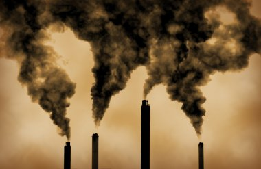

What is Global warning
Global warming is the gradual increase in the average temperature of the planet over a long period of time. The planet has been gradually warming up for some time now, but it has increased rapidly in the last century. As our population has grown, so has our reliance on fossil fuels such as coal, oil, and natural gas. These fuels emit greenhouse gasses such as carbon dioxide, methane, and nitrous oxide, which trap heat from the sun in the Earth's atmosphere.

This creates what is known as the greenhouse effect. While some of these gasses occur naturally, human activities have dramatically increased their levels, leading to the current crisis of global warming. These pollutants accumulate in the atmosphere and absorb sunlight and solar radiation, preventing them from escaping into space. While some greenhouse gasses occur naturally, human activities have significantly increased their concentration in the atmosphere, leading to the current crisis we call global warming.
Since the Industrial Revolution, the global annual temperature has increased in total by a little more than 1 degree Celsius, or about 2 degrees Fahrenheit. Between 1880—the year that accurate recordkeeping began—and 1980, it rose on average by 0.07 degrees Celsius (0.13 degrees Fahrenheit) every 10 years. Since 1981, however, the rate of increase has more than doubled: For the last 40 years, we’ve seen the global annual temperature rise by 0.18 degrees Celsius, or 0.32 degrees Fahrenheit, per decade.
The result?
 A planet that has never been hotter. Nine of the 10 warmest years since 1880 have occurred since 2005—and the 5 warmest years on record have all occurred since 2015. Climate change deniers have argued that there has been a “pause” or a “slowdown” in rising global temperatures, but numerous studies, including a 2018 paper published in the journal Environmental Research Letters, have disproved this claim. The impacts of global warming are already harming people around the world.
Now climate scientists have concluded that we must limit global warming to 1.5 degrees Celsius by 2040 if we are to avoid a future in which everyday life around the world is marked by its worst, most devastating effects: the extreme droughts, wildfires, floods, tropical storms, and other disasters that we refer to collectively as climate change. These effects are felt by all people in one way or another but are experienced most acutely by the underprivileged, the economically marginalized, and people of color, for whom climate change is often a key driver of poverty, displacement, hunger, and social unrest.
A planet that has never been hotter. Nine of the 10 warmest years since 1880 have occurred since 2005—and the 5 warmest years on record have all occurred since 2015. Climate change deniers have argued that there has been a “pause” or a “slowdown” in rising global temperatures, but numerous studies, including a 2018 paper published in the journal Environmental Research Letters, have disproved this claim. The impacts of global warming are already harming people around the world.
Now climate scientists have concluded that we must limit global warming to 1.5 degrees Celsius by 2040 if we are to avoid a future in which everyday life around the world is marked by its worst, most devastating effects: the extreme droughts, wildfires, floods, tropical storms, and other disasters that we refer to collectively as climate change. These effects are felt by all people in one way or another but are experienced most acutely by the underprivileged, the economically marginalized, and people of color, for whom climate change is often a key driver of poverty, displacement, hunger, and social unrest.
What Are the Causes of Global Warming?
Global warming occurs when carbon dioxide (CO2) and other air pollutants collect in the atmosphere and absorb sunlight and solar radiation that have bounced off the earth’s surface.
Normally this radiation would escape into space, but these pollutants, which can last for years to centuries in the atmosphere, trap the heat and cause the planet to get hotter. These heat-trapping pollutants—specifically carbon dioxide, methane, nitrous oxide, water vapor, and synthetic fluorinated gases—are known as greenhouse gases, and their impact is called the greenhouse effect.
Though natural cycles and fluctuations have caused the earth’s climate to change several times over the last 800,000 years, our current era of global warming is directly attributable to human activity—specifically to our burning of fossil fuels such as coal, oil, gasoline, and natural gas, which results in the greenhouse effect. In the United States, the largest source of greenhouse gases is transportation (29 percent), followed closely by electricity production (28 percent) and industrial activity (22 percent). Learn about the natural and human causes of climate change.
Hi, it's us, we're the problem here. Human activities that release greenhouse gasses into the atmosphere are the primary global warming causes. Our burning of fossil fuels, clearing of trees, and large-scale agriculture has released gasses to levels not seen in 3 million years.
Even a slight rise in temperature could have catastrophic consequences, like exposing millions of people to life-threatening water scarcity, heatwaves, and flooding.
Since the Industrial Revolution, the Earth's average annual temperature has risen by over 1 degree Celsius or about 2 degrees Fahrenheit. The rate of increase has more than doubled since 1981, with the global temperature rising by 0.18 degrees Celsius, or 0.32 degrees Fahrenheit per decade in the past 40 years. This unprecedented warming has already caused more frequent and severe weather events, rising sea levels, and ecosystem shifts.
What Are the Effects of Global Warming?
Droughts and other extreme weather events are devastating farmland and other food sources, causing hunger and famine to increase; at the same time rising sea levels are sinking islands. Entire communities are being decimated by floods; and numerous animal species are at risk disappearing forever.
And that's just the beginning when it comes to the effects of global warming.
Global warming has far-reaching and numerous effects. It causes glaciers and ice caps to melt, leading to rising sea levels that put coastal communities at risk and disrupt global weather patterns. It also leads to more severe and frequent extreme weather events, including heatwaves, droughts, wildfires, hurricanes, and heavy rainfall events. Changes in rain patterns are also occurring, with some regions experiencing increased rainfall and others experiencing more extended periods of drought.
As temperatures continue to rise, habitats are disappearing, and ecosystems are being altered, leading to a loss of species diversity. Global warming is not only endangering the planet's biodiversity, but it is also causing significant public health impacts, like more heat-related illnesses, breathing problems, and other health issues, especially among vulnerable populations.
Each year we learn about more global warming effects, and each year we discover new evidence of its devastating impact on the planet.

Who Is Most Impacted by Global Warming?
Although global warming impacts everyone, not everyone is impacted equally. Marginalized and disadvantaged communities, such as low-income communities, Indigenous peoples, women and children, and those living in areas with high levels of exposure to climate-related risks, are typically the most impacted by global warming.
The negative impacts of global warming disproportionately affect marginalized communities who are already disadvantaged due to systemic inequities in housing, health care, and labor. These communities — despite contributing the least to global warming — are more vulnerable to its worst effects.

Who Is Most Responsible for Global Warming?
According to Carbon Brief, the United States is the nation most responsible for the climate crisis, having released 20% of all emissions historically. But it's not just the US to blame: the richest 20 countries in the world are responsible for just under 80% of greenhouse gas emissions overall. This means that most emissions come from a small number of countries, while those least responsible for the climate crisis are experiencing its worst impacts.
Ultimately, the wealthiest are the most responsible, whether it's nations or individuals. As the UN highlights, for example, the combined emissions of the richest 1% of the world's population are larger than the combined emissions of the poorest 50%.
The average billionaire's annual emissions are a million times higher than a person in the poorest 90% of the world’s population, says Oxfam. In fact, the annual emissions of just 125 billionaires (through their investments) are the equivalent of those of France.
What Can We Do to Stop Global Warming?
Global warming is a serious problem that gets worse the longer we delay action. To effectively address global warming and climate change, we must reduce greenhouse gas emissions urgently and on a large scale and invest in a global shift to clean energy.
And while personal actions are important, effective policies and international cooperation are vital in addressing the root causes and effects of global warming. It is crucial that we limit carbon pollution and swiftly transition from fossil fuels to cleaner sources of energy. Setting goals for the distant future won't help if we don't take immediate action.
If we fail to reduce our emissions, scientists predict that global warming and climate change could result in the deaths of more than 250,000 people worldwide each year, spark mass migration and displacement, and push up to 130 million people into poverty over the next 10 years.
You can raise your voice right now to urge world and business leaders to urgently step up and tackle global warming and climate change by joining our Power Our Planet campaign. By taking action, you can call on world leaders, business leaders, the world's multilateral development banks, philanthropists, and more, to urgently deliver the financing and policy changes needed to combat climate change, and ensure the countries most vulnerable to climate change can access the financing solutions they need.
Find out more here about the Power Our Planet campaign and how you can get involved.